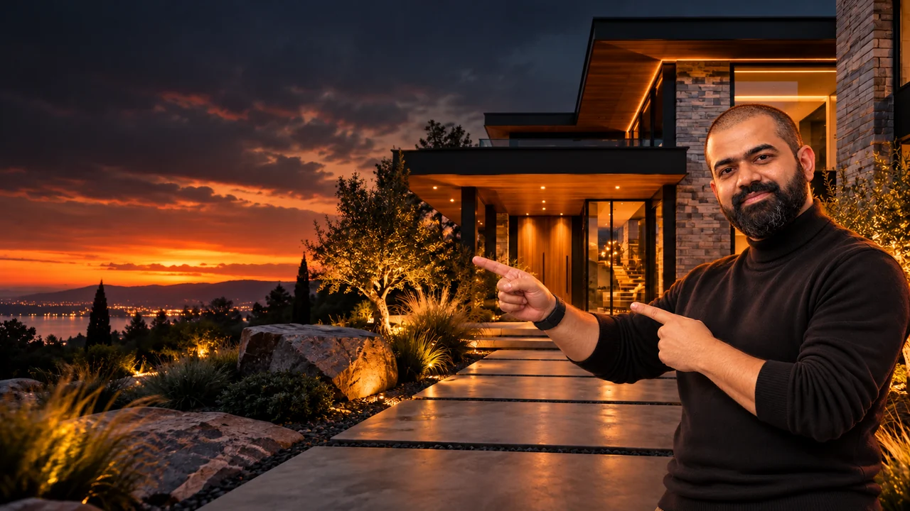

Chrome image-conversion extension
Save unsupported WebP references as PNG or JPEG before bringing them into production.
Plan one route through the property and make a one-minute team film with purposeful camera moves.
October 31, 2026 · 8:00 to 10:00 PM IST
 Guided by Alexx Roy
Guided by Alexx Roy
Start with the supplied property images. Make only the views you need, bring them to life and cut one clear tour in Filmora. Aim for a minute or less.
Download the exterior and interior images your team will actually use. Keep the same property as the visual anchor.
Bring in: the supplied property image website ↗ and a shared place for the team’s files.
The property is recognizable across the selected references and every file opens.
A file is unsupported, tiny or belongs to a different property.
Convert or replace that source image before generating anything from it.
You can use the downloaded images directly. If the route needs another angle or a 16:9 frame, Nano Banana or GPT Image 2 can recreate the same property.
Why: a start frame and an end frame work only when they still look like the same place.
Each still can serve as a believable start or destination in the same property.
The architecture shifts before motion begins.
Return to the clearest reference and request one change at a time.
Kling 3.0 Omni was demonstrated, but the instructor allowed another video model or approach. Use start-only when a clip does not need a prescribed destination; use start and end frames when the transition matters.
Why: movement should reveal the property while the walls, materials and layout stay stable.
The camera glides through open space and makes the property easier to understand.
Walls bend, rooms mutate or the camera passes through a solid surface.
Shorten or redirect the move and use a better-matched frame pair.
Bring the useful clips into Filmora, arrange one clear route and add music. The reference video includes beauty shots, but the challenge asks you to prioritize image-to-video movement.
One team film, one readable property and no unnecessary detours.
The film becomes a collection of attractive but disconnected shots.
Keep the clips that clarify the route and remove the rest.
Notice how the film moves through the property. Your challenge is the walkthrough itself.
Save unsupported WebP references as PNG or JPEG before bringing them into production.
Recreate the same property at 16:9 or prepare another angle while preserving its structure.
Use as an alternative route for another angle or a matching property view.
Animate a start frame alone or a matched start and end frame into walkthrough motion.
The class recording used this environment to show previously generated image-to-video walkthrough examples.
Edit the team’s approved motion clips into one walkthrough and add music.
These prompts come from the class handout ↗. Keep their wording intact when copying. The sketch and courtyard examples describe different source images.
Convert this rough sketch to an ultra realistic 4K quality image of a contemporary style house with pastel color tones, also add a loan to the front garden. Strictly don’t change the structural details from the given drawing.
OPEN THIS EXACT PROMPT IN PROMPT VAULT →
Source: Advanced Real estate Video production, supplied class handout. Demonstration only; the source wording “loan” is preserved exactly.
A smooth, steady and slow FPV drone moves through video of a luxury real estate property. The FPV drone starts from a wide angle into the start image and does a slow dolly in, then gradually increases the speed and enters to the end frame, then does a dollyout and a jib up to reveal a wide angle of end frame. Keep the natural parallax of objects and materials within, strictly don't change any features or objects from the reference image. there is no need to show the drone, it should be a complete FPV visual.
OPEN THIS EXACT PROMPT IN PROMPT VAULT →
Source: Advanced Real estate Video production, supplied class handout.
[Start Frame: Provided Image] Seamless first-person view (FPV) drone shot beginning exactly from this courtyard perspective. The camera lifts smoothly and moves along a dynamic, continuous flight path. Maintaining 100% structural and architectural consistency of the environment: the drone skims low over the circular stone fountain with cascading water, banking gently to the right. It sweeps smoothly past the active fire pit and over the manicured green lawn, maintaining the light-beige neo-classical luxury villa on the left and the lush palm trees on the right. The flight continues through the courtyard, executing a precise cinematic curve around the modern wooden pergola and towards the circular cutout wall featuring the manicured bonsai tree. Style and Technicals: Hyper-realistic, fluid FPV drone physics, organic motion blur during fast banks, continuous one-take sequence, volumetric golden hour morning sunlight casting long shadows, 8k resolution, photorealistic textures. No cuts, no warping.
OPEN THIS EXACT PROMPT IN PROMPT VAULT →
Source: Advanced Real estate Video production, supplied class handout. This prompt names a specific courtyard.
[Start Frame: Provided Image] Realistic, fluid first-person view (FPV) drone fly-through shot starting exactly from the perspective and geometry defined by the input image. Structural Integrity: The generation must maintain absolute architectural accuracy and geometric consistency of all buildings, structures, walls, and landscape features visible in the initial frame. All architectural elements must remain completely rigid and physically static, with zero morphing, warping, stretching, or changing shapes as the camera moves past them. Motion: The camera glides smoothly and dynamically along a continuous, stable aerial trajectory, strictly through open spaces (not passing through solid walls). Realistically simulate parallax and lens distortion appropriate for an FPV drone. Exclusions & Quality: Clean cinematic output. Absolutely no visible interface elements, no red lines, no drawn path overlays, no brush strokes, and no motion trail artifacts. Professional 4k drone stabilization, crisp textures, natural lighting, and photorealistic depth of field.
OPEN THIS EXACT PROMPT IN PROMPT VAULT →
Source: Advanced Real estate Video production, supplied class handout.
[Start Frame: Uploaded Image/Coordinates] First-person view (FPV) drone fly-through animation sequence beginning exactly from the camera perspective, depth parameters, and spatial coordinate layout defined by the source image at coordinates [INSERT LATITUDE, LONGITUDE]. CRITICAL ENVIRONMENT CONSTRAINT: The model must maintain 100% geometric, structural, and environmental fidelity to the provided start frame. The underlying terrain, layout, elements, and horizons of this [INSERT LANDSCAPE TYPE: e.g., open desert field / rocky canyon / dense forest] must remain completely rigid, unmutated, and physically static. Zero morphing, zero hallucinating of new buildings, zero warping of existing landmarks, and zero structural shifting as the camera translates through space. FLIGHT PATH & KINETICS: Execute a continuous, single-take aerial camera movement following the user-drawn trajectory path. The drone must glide smoothly over [INSERT FOCUS ELEMENT: e.g., the open dirt path / the grassy plain], simulating realistic drone aerodynamics, smooth bank compensation, subtle natural motion blur on fast turns, and real-world lens parallax. MANDATORY ARTIFACT EXCLUSION: The final video must be a clean, cinematic photographic render. Systematically eliminate all user interface overlays, brush stroke artifacts, drawn lines, colored paths, or motion path tracking indicators from the output frames.
OPEN THIS EXACT PROMPT IN PROMPT VAULT →
Source: Advanced Real estate Video production, supplied class handout. Replace only the bracketed fields with verified details.
Open the Playbook, split the work and bring one property to life.
OPEN THE PLAYBOOK